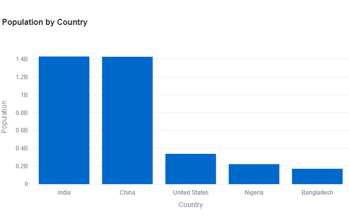

Country-wise Population Visualization
Description:
The "Country-wise Population Visualization" project is a Streamlit app that allows users to explore and visualize population data for different countries. The app loads data from a CSV file and provides various interactive visualization options to gain insights into population trends.
Features:
- Raw Data Display: Users can choose to display the raw data from the CSV file, providing an overview of all the available population data.
- Population by Country Bar Chart: The app generates a bar chart visualizing the population of selected countries. Users can choose specific countries to compare and analyze their respective populations.
- Population Over Time Line Chart: The app creates a line chart that showcases the population changes over time for selected countries. Users can observe population trends for different years and compare the growth patterns of various countries.
- Statistics Summary: A statistics summary is provided for the selected countries, including population data from different years. Users can quickly access key statistical measures like mean, standard deviation, minimum, maximum, etc.
- Population Map: An interactive choropleth map is included to visualize the population distribution across countries. The map displays the population data for each country, allowing users to hover over countries and view specific population values.
Technologies Used:
- Streamlit: A Python library for creating interactive web applications.
- Pandas: A powerful data manipulation and analysis library in Python.
- Plotly Express: A high-level data visualization library that simplifies the creation of interactive plots.
- Hosting: Hugging Face
Usage:
Users can interact with the Streamlit app by selecting options in the sidebar, such as choosing countries, toggling the display of raw data, and exploring various visualizations. The app provides an intuitive and user-friendly interface to analyze and visualize country-wise population data.

View Project
ChatGpt Twitter Sentiment Analysis
Introduction
The ChatGpt Twitter Sentiment Analysis is a Streamlit app that allows users to analyze the sentiment of tweets. It utilizes the TextBlob library to perform sentiment analysis on Twitter data provided in a CSV file.
Features
- Upload CSV File: Users can upload a CSV file containing tweets and labels.
- Display Data: The app displays the first few rows of the CSV file for data preview.
- Number of Tweets: Users can specify the number of tweets they want to analyze.
- Sentiment Analysis: By clicking the "Analyze" button, the app performs sentiment analysis on the specified number of tweets.
- Top Positive and Negative Tweets: The app displays the top positive and negative tweets based on sentiment scores.
- Sentiment Distribution: The app visualizes the sentiment distribution using a histogram.
How to Use
- Upload a CSV file containing tweets and labels.
- Specify the number of tweets to analyze.
- Click the "Analyze" button to perform sentiment analysis.
- View the top positive and negative tweets along with their sentiment scores.
- Observe the sentiment distribution graph to get an overview of tweet sentiments.
Technologies Used
- Streamlit: Used to build the interactive web app.
- Pandas: Used for data manipulation and analysis.
- TextBlob: Used for sentiment analysis of the tweets.
- Matplotlib: Used to create the sentiment distribution graph.
- Hosting: Hugging Face
Conclusion
The ChatGpt Twitter Sentiment Analysis app provides a user-friendly interface to analyze the sentiment of tweets. It enables users to gain insights into the sentiment distribution and identify the top positive and negative tweets. The app can be customized and extended further based on specific requirements.
View Project

View Project
Sentiment Analysis of Tweets about US Airlines
View Project
Layoffs Data Visualization
View Project